クアッドクローラー プログラミング
アプリダウンロードはこちら、本体ソフトの更新はこちらを参照して下さい。
- 「つくるっち」からロボットを操作する
- リモコンを押したときブザーを鳴らすプログラムを作る
- 自分のプログラムをロボットに書き込む
- クアッドクローラーのプログラムを作る
- ロボットを歩かせる
- サンプルプログラム
- 「最初のプログラム」とArduino API
「つくるっち」からロボットを操作する
「つくるっち」でロボットを操作してみます。
 のように表示されているか確認し、表示されてないときはPC通信モードに設定を実行して下さい。
のように表示されているか確認し、表示されてないときはPC通信モードに設定を実行して下さい。- を押すとロボットのブザーが鳴ります。
- を押すとロボットが前に進みます。を押すと止まります。
リモコンを押したときブザーを鳴らすプログラムを作る
リモコンのボタンを押したときブザーを鳴らすプログラムを作ります。
- 図の通り - を置く。
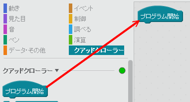
- 図の通り -
 を置く、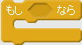を置く。
を置く、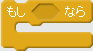を置く。
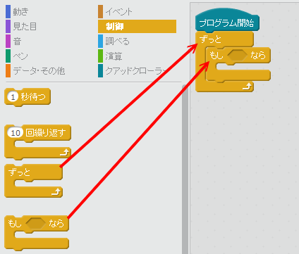
- - を置く、を置く。
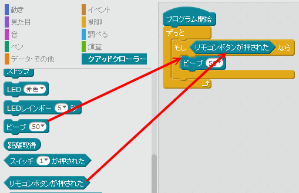
- ブロックの端をクリックしてブロックのまわりが黄色い状態にします。この状態でロボットに向けリモコンのボタンを押すとブザーが鳴ります。
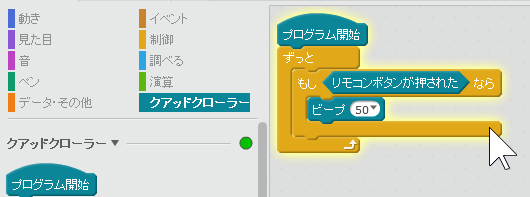
自分のプログラムをロボットに書き込む
- 自分で作ったプログラムはそのままでは「つくるっち」がないと動作しませんが、自分のプログラムをロボットに書き込むとパソコンや「つくるっち」なしでプログラムを動かすことが出来ます。
- [Arduino]をクリック、[Arduinoにアップロード]を選択。プログラム書き込みには30秒くらいかかります、「アップロード中」は「閉じる」を押さないで下さい。
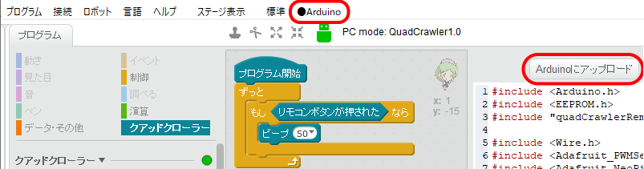
- 「つくるっち」でプログラムを編集するときはもう一度「PC通信モードに設定」して下さい。
クアッドクローラーのプログラムを作る
標準リモコンでクアッドクローラーを動かすプログラムを作ります。
- のように表示されているか確認して下さい。
- 下の図のとおり、クアッドクローラーのプログラムを作ってみて下さい。プログラムのどこかをクリックするとプログラムを動かすことができます。
- 「自分のプログラムを書き込む」とUSBケーブルなしで動きます。
- 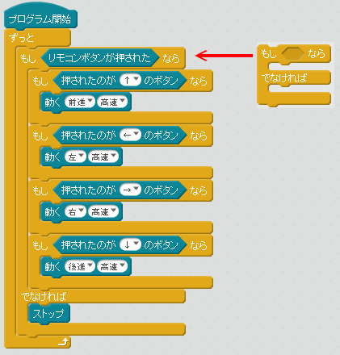
ロボットを歩かせる
自動で歩くの代わりに１歩ずつ歩くプログラムを作ります。
ロボットがどうやって歩くのか確認します。
※注意：実行中は停止していても電池を消費します（赤LEDが点滅します）。でサーボを止めて下さい。
- のように表示されているか確認して下さい。
- 前進
4つの状態で１周期です。ブロックをクリックすると１周期歩きます。
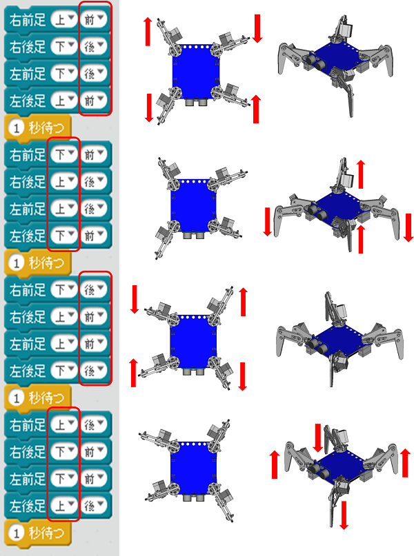
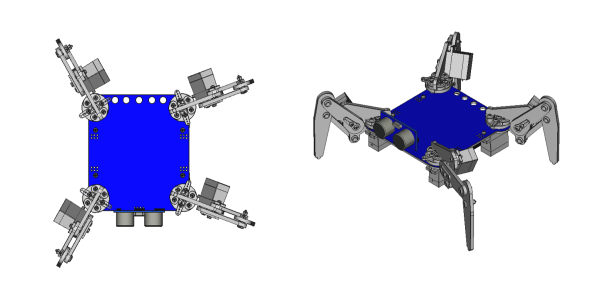 - 後進
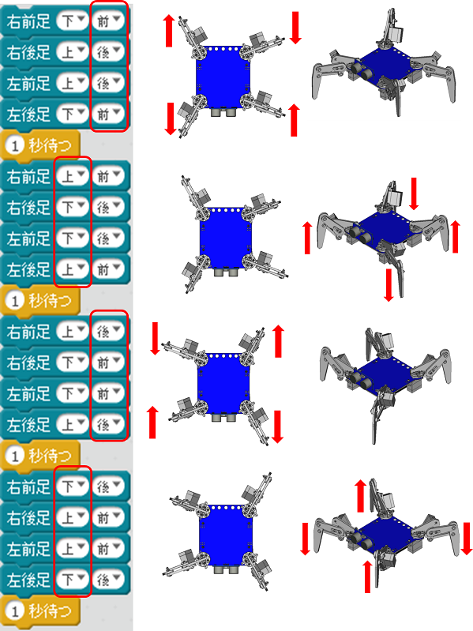 - 旋回(時計回り)
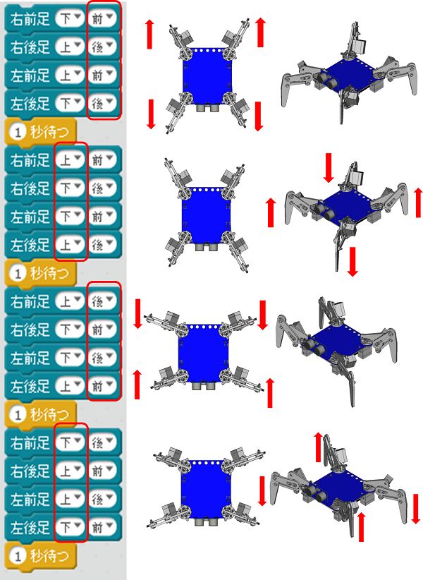 - 旋回（反時計回り）
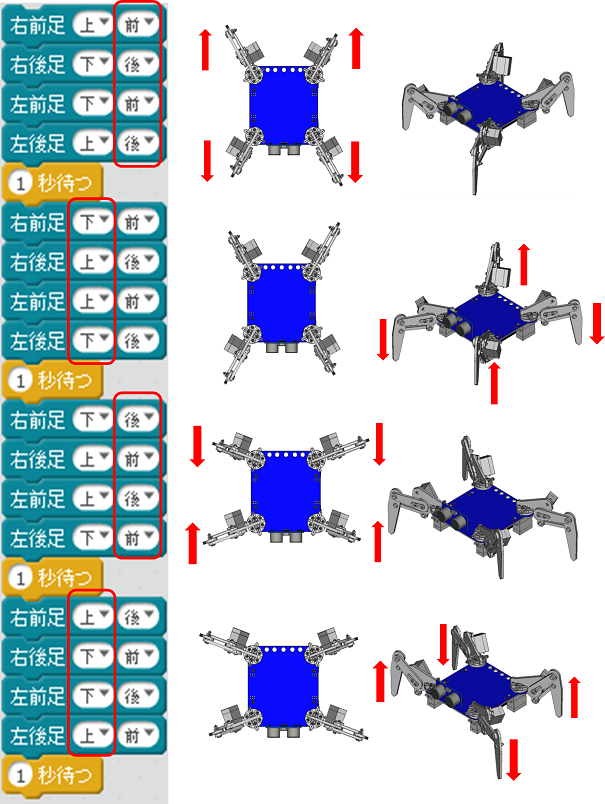
サンプルプログラム
- 「つくるっち」には４つのサンプルプログラムが入ってます。[プログラム] - [開く] で開いてください。
-
ファイル名 説明 アナログクアッド.sb2 アナログリモコンでロボットを操作 アナログクアッドブロック.sb2 アナログリモコンでロボットを操作（ブロック使用） デジタルクアッド.sb2 標準リモコンでロボットを操作 デジタルクアッドブロック.sb2 標準リモコンでロボットを操作（ブロック使用）
「最初のプログラム」とArduino API
- 「最初のプログラム」 は ext/libraries/QuadCrawler/robot_normal/ にあります。
サンプルプログラム （*.sb2） の機能に加えて「SW4による初期姿勢」「超音波センサ」「アナログリモコン D を押しながらの動作」に対応してます。 - Arduino用ライブラリは ext/libraries/QuadCrawler/quadCrawlerLib/にあります。
詳細についてはヘッダファイルを参照して下さい。
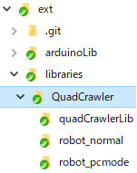